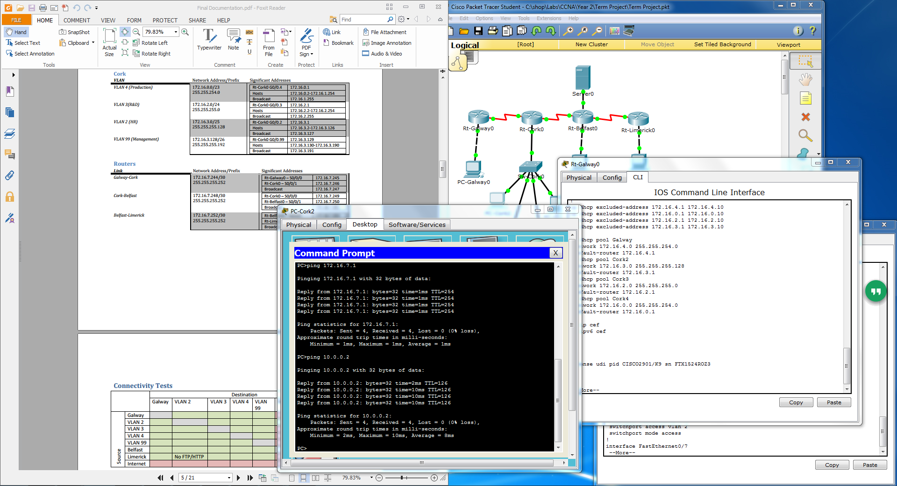

As part of my CCENT training, I designed a virtual network with OSPF routing, DHCP, and NAT translation in Cisco Packet Tracer. This project was designed to accurately simulate the design and configuration of a large corporate network.
The network itself was designed in Cisco's Packet Tracer network simulation tool. The tool emulates the command line interface on Cisco routers and switches, so that a network can be configured almost exactly as it would in a real world scenario.
In addition to configuring the network in Packet Tracer I also documented the configuration in various tables and command listings. This documentation provides a technician with the information needed to navigate and troubleshoot the network. This includes full documentation of the subnetting scheme used on the network.